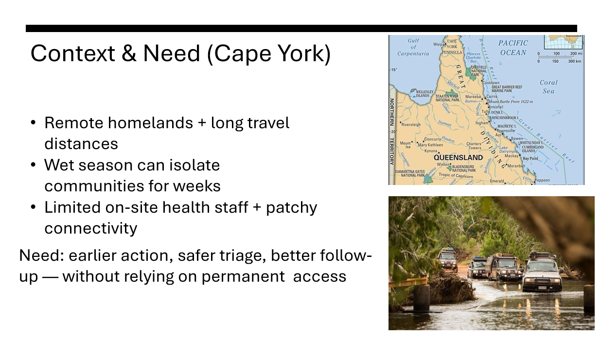
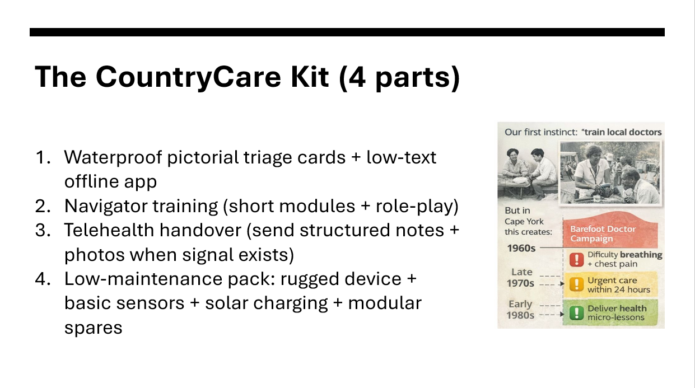
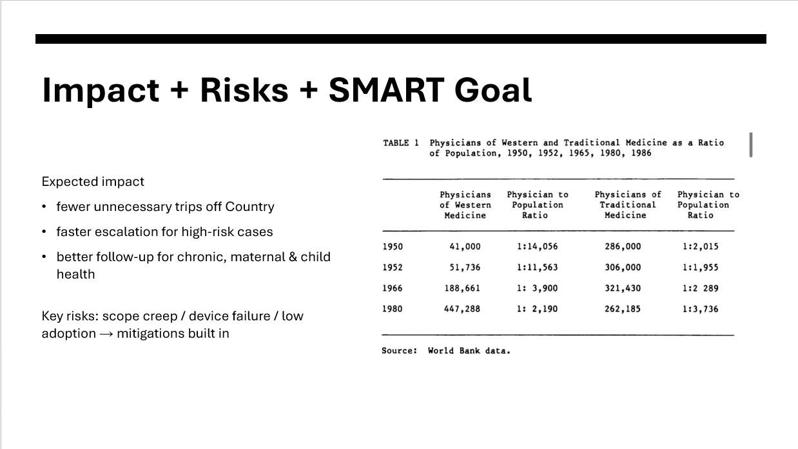
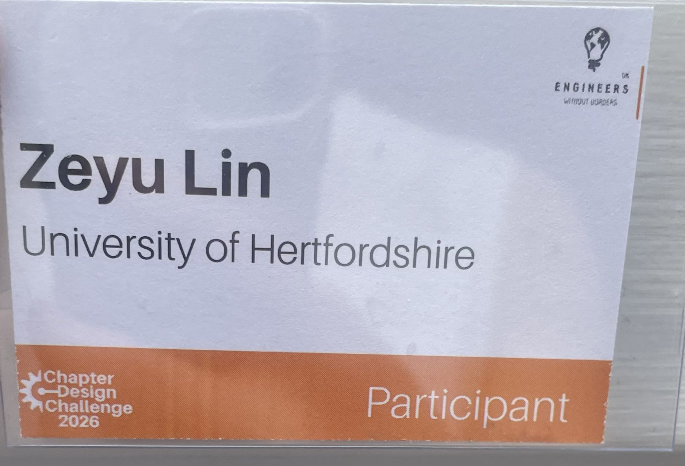

Initial concept
Proposed the barefoot-doctor model as the starting point for locally supported healthcare.
Engineers Without Borders UK · Five-person team · March 2026
A user-centred concept for safer healthcare triage and follow-up in remote Cape York communities.

Context and need
Remote homelands in Cape York can face long travel distances, while the wet season may isolate communities for weeks. Limited on-site health staff and patchy connectivity further restrict access to timely support.
The team focused on earlier action, safer triage and stronger follow-up without assuming permanent internet access.
Proposed solution
Four linked elements address access, local capability, escalation and operational resilience in the Cape York context.

Pictorial triage and offline guidance support early action without continuous connectivity.
Short training modules help community navigators apply the triage process when health staff are not on site.
Standardised notes and photos enable clearer telehealth handover when a signal is available.
Rugged equipment, solar charging and modular spares reduce dependence on local infrastructure.
Impact and risks
The proposal aimed to reduce unnecessary trips off Country, accelerate escalation for high-risk cases and improve follow-up for chronic, maternal and child health.
Scope creep, device failure and low adoption were identified as key risks so that mitigation could be considered within the implementation strategy.

Contribution and outcome
Proposed the barefoot-doctor model as the starting point for locally supported healthcare.
Contributed to risk analysis, cost planning, implementation strategy and speaker notes.
Developed supporting visuals and participated in the final presentation.

The project developed my user-centred design, risk assessment, cost planning and presentation skills.